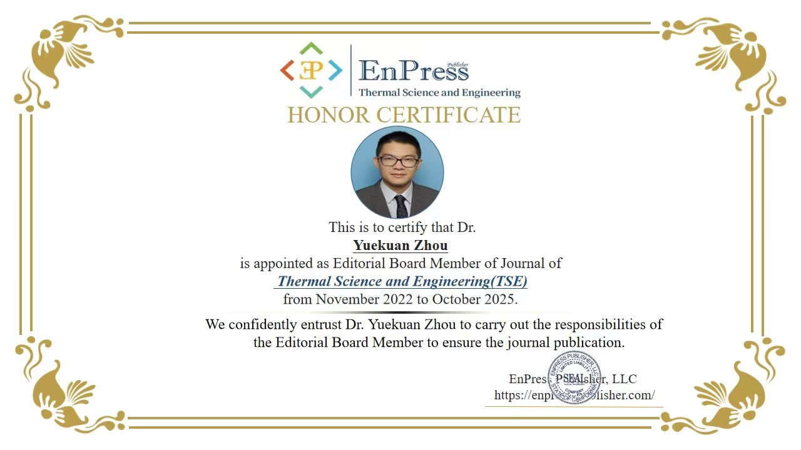
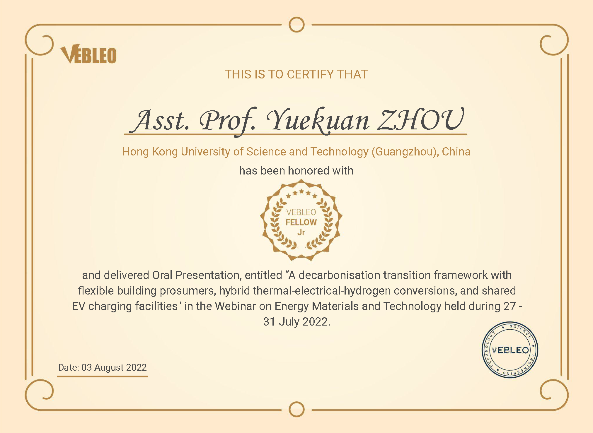
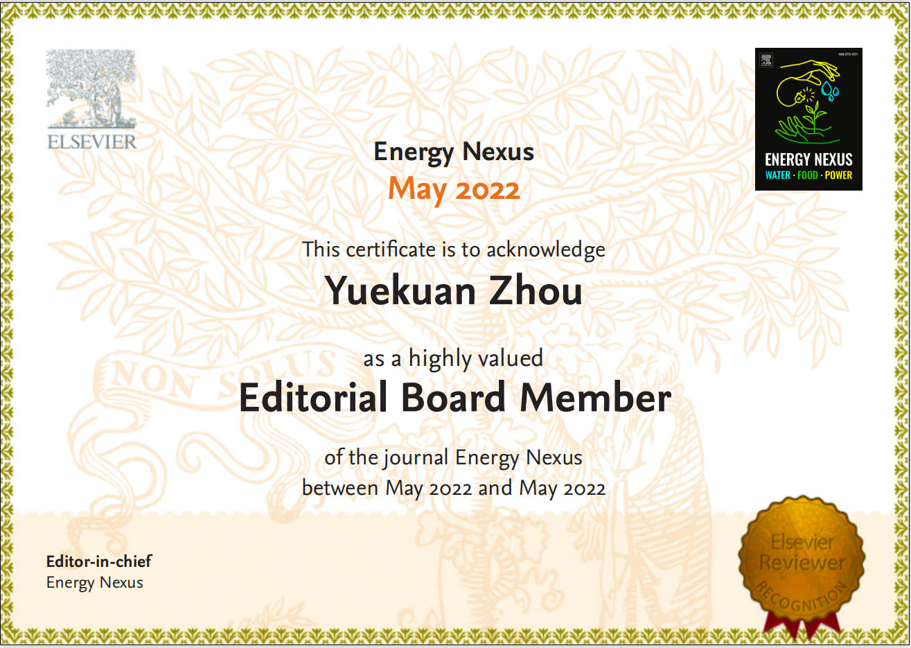
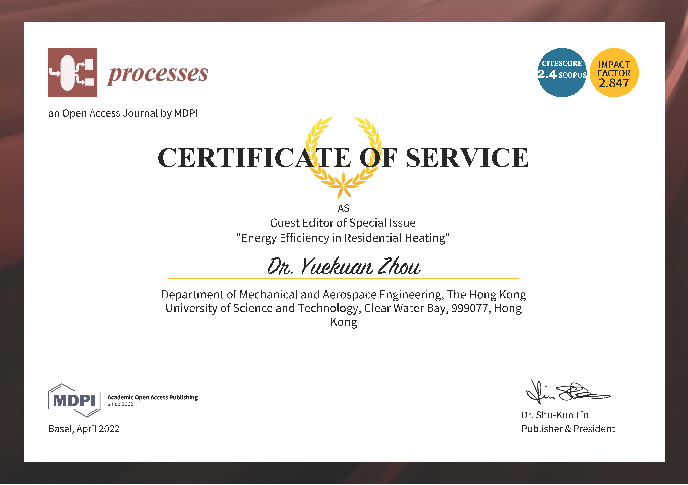
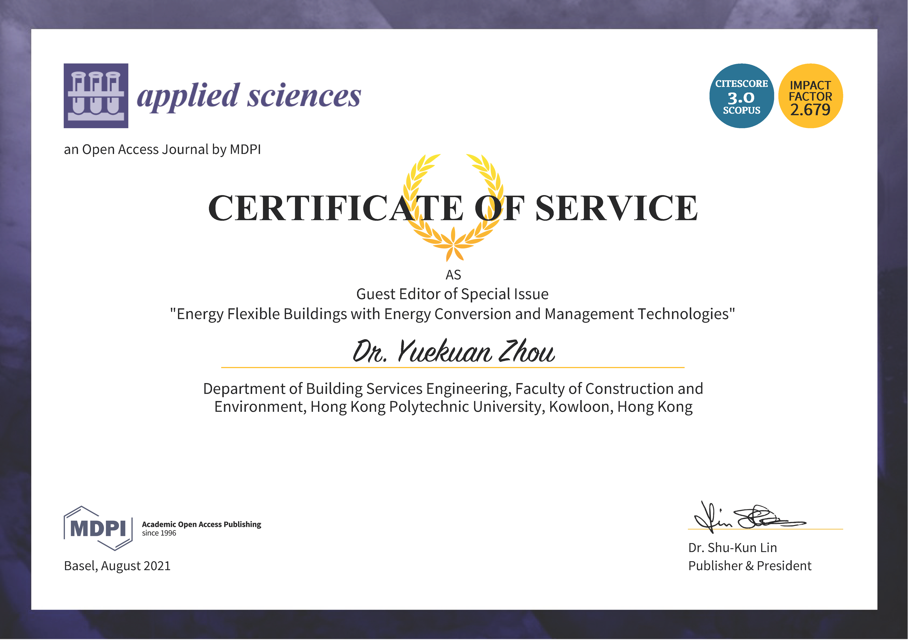
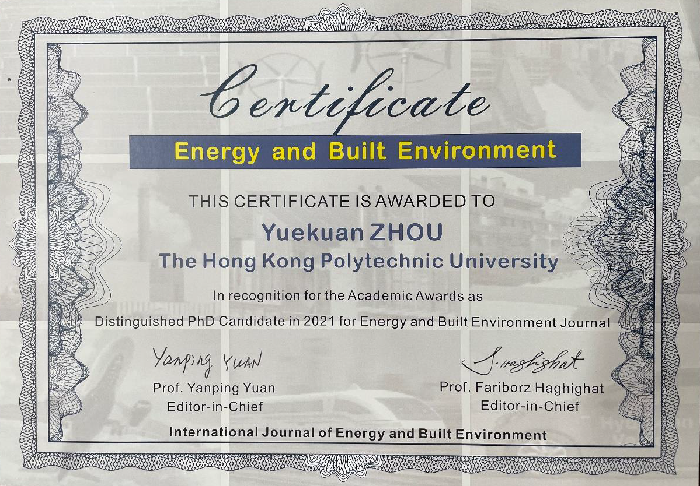
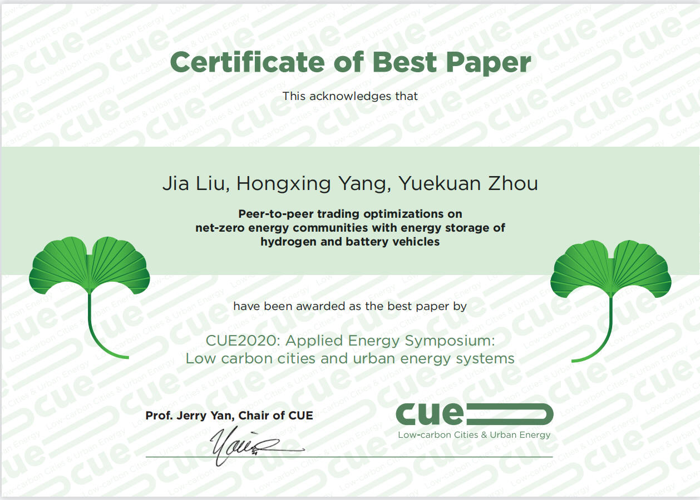
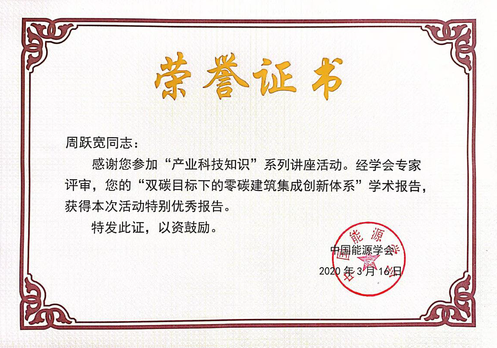

_Logo.png) FunH-Intelligent
Renewable
& Sustainable
Technology(FIRST)
FunH-Intelligent
Renewable
& Sustainable
Technology(FIRST)
-Yuekuan ZHOU's Group
Home > News
|  |
Dr. Yuekuan ZHOU is appointed as
Editorial Board Member of Journal of Thermal Science and Engineering
(TSE) November 2022 TSE is an international open access journal that publishes high-quality research articles that span activities ranging from fundamental thermodynamic scientific research to the applied discussion of maximising thermodynamic efficiencies and minimising all heat losses. Topics cover thermal biology, nanotechnology, thermal energy transport, thermodynamics, thermal medical systems, and devices, etc. |
|  |
Dr. Yuekuan ZHOU has been honored
with VEBLEO FELLOW August 2022 Vebleo is an organizer of international in-person and virtual conferences, workshops, and exhibitions in the multidisciplinary fields of science, engineering, and technology across the globe. Vebleo Fellow recognizes researcher or scientist who has prominence and leadership in the field of science, engineering, and technology. This recognition serves to honour and acknowledge their career achievement. |
|  |
Dr. Yuekuan ZHOU was appointed as the Editor
Board Member of Energy Nexus May 2022 Energy Nexus is an inter-disciplinary journal which covers the deep, broad, meaningful convergence between Energy, Water, and Agriculture. The journal topics will include grid systems dynamics, power-plant cooling, hydrology, increased production planning, aquaculture, biomass fuels, hydropower, renewable energy, energy system dynamics modelling and informatics as well as other topics. |
|  |
Dr. Yuekuan ZHOU was appointed as the
Guest Editor
of the Special Issue "Energy Efficiency in Residential Heating" of
processes April 2022 Processes is an international, peer-reviewed, open access journal on processes in chemistry, biology, materials, energy, environment, food, pharmaceutical, manufacturing and allied engineering fields published monthly online by MDPI. |
|  |
Dr. Yuekuan ZHOU was appointed as the
Guest Editor
of the Special Issue "Energy Flexible Buildings with Energy Conversion
and Management Technologies" of applied sciences August 2021 Applied Sciences is an international, peer-reviewed, open access journal on all aspects of applied natural sciences published semimonthly online by MDPI. |
|  |
Dr. Yuekuan ZHOU was awarded as
the Distinguished PhD Candidate in 2021 for Energy and Built Environment
Journal 2021 Energy and Built Environment (EBE) is an international journal that disseminates original research articles on energy harvesting and utilization in the built environment. The aim is to present new research results that are focused on promoting energy efficiency, clean energy utilization, and environment quality in the built environment, which constitutes buildings and transportation. |
|  |
Dr. Yuekuan ZHOU's Paper was selected as
the Best Paper at the international CUE conference September 2021 The conference is organised by the top journal: Applied Energy. |
|
 |
Dr. Yuekuan ZHOU's
report was awarded as excellent in the
"Industrial Science and Technology Knowledge" lecture series
of the China Energy Society March 2020 China Energy Society is a social organization jointly initiated by institutions and individuals who are keen on promoting the development of the energy economy. It is a professional consulting service organization in China. |
For more details, please contact Dr. Yuekuan ZHOU via yuekuanzhou@ust.hk